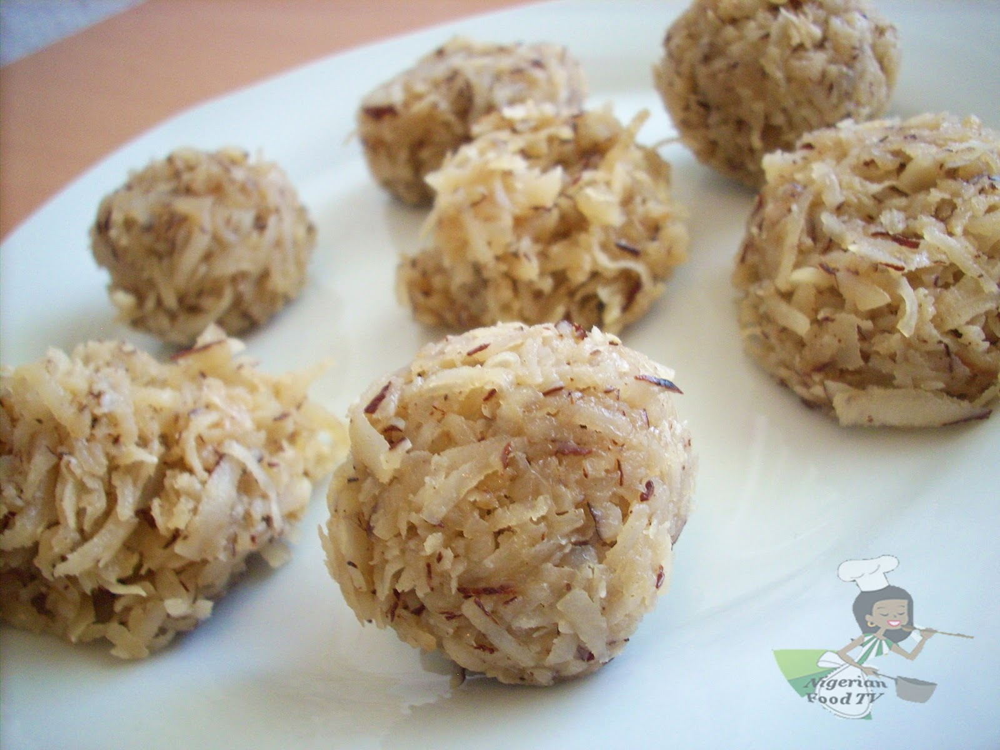

Coconut Candy

Description
Coconut Candy is a classic Nigerian sweet treat and this recipe will be showing the details on how to make a delicious Nigerian Coconut Candy.
Ingredients
- 1 medium Coconut
- 200 gram white granulated/castor sugar
- 125ml/half a cup of water
Tip: A good substitute for white sugar in this recipe is unrefined cane sugar (panela)
Steps
- Break the coconut and pry out the flesh. Grate the coconut flash and set aside
- Combine the water and sugar in a pot and boil on medium heat. Without stirring
- As the mixture begins to look thicker and color chnages to a very light brown. Reduce the heat to low. Add the coconut and mix thoroughly with a spatula, until it is well incorporated
- Keep pn stiring until the mixture is a browner color and feels grainy on your spatula. Then put off the heat.
- Tip: The sugar caramelizes faster at this stage, and can get burnt and ruin the recipe. So watch it closely
- Transfer the coconut candy into a wide tray, spread out and leave to cool a bit
- You can mold into any shape of choice or simply leave it to cool completely and harden. Then cut into square or rectangles
- Place in the freezer or refrigerator to harden faster
- To get a very hard candy, you will have to increase the amount of sugar used (some people likes their coconut hard and crunchy, depending on your peference)
- Your Nigerian Coconut is ready. YUM!